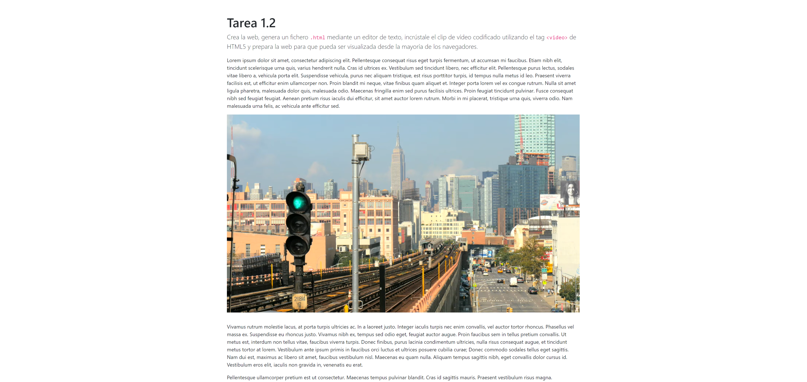

Tarea 1.2
Crea la web, genera un fichero .html mediante un editor de texto, incrústale el clip de vídeo codificado utilizando el tag <video> de HTML5 y prepara la web para que pueda ser visualizada desde la mayoría de los navegadores.
¿Qué características se pueden destacar de la publicación y visualización de un vídeo en HTML5 respecto a otros métodos de publicación?
La incrustación de los clips de vídeo codificados se hace utilizando la etiqueta video de HTML5. Dentro de ella se indicarán las fuentes de vídeo que se utilizarán con la etiqueta source. El resultado es el siguiente bloque de código:
<div class="embed-responsive embed-responsive-16by9" style="margin-bottom: 2em;">
<video class="pec_video">
<source src="assets/video_1080p.webm" type="video/webm">
<source src="assets/video_720p.mp4" type="video/mp4">
El navegador no soporta la etiqueta <code><video></code>.
</video>
</div>
El bloque de código da como resultado el siguiente vídeo incrustado:
Imágenes de stock proporcionadas por Videvo, descargadas de www.videvo.net
El atributo type indicando el MIME de los dos clips codificados para que el navegador realice la negociación de contenido, descargando el primero de los clips que sea soportado. En el caso de que el navegador no fuese compatible con la etiqueta video de HTML5 se mostraría el mensaje El navegador no soporta los clips de vídeo incrustados.
Para darle formato a la web se ha utilizado el framework CSS Bootstrap que permite formatear con facilidad las webs proporcionando un diseño responsive y orientado a dispositivos móviles. El vídeo se ha colocado dentro de un contendor div de las clases embed-responsive y embed-responsive-16by9 para garantizar que el contenido se adapta a las características del dispositivo.
| Navegador de escritorio | Dispositivo móvil |
|---|---|
|  |
Por defecto los controles de reproducción del clip de vídeo no son visibles. Una opción es utilizar el atributo controls en la etiqueta video pero sería incómodo para el usuario no poder quitarlos de la visualización. Por este motivo se ha optado por un script utilizando la librería jQuery para mostrar los controles cuando el ratón entra en el vídeo y ocultarlos cuando sale.
El script utilizado es el mostrado a continuación y se aplicaría sobre los elementos de la clase pec_video que en este ejercicio son los clips de video incrustado.
$("document").ready( function() {
// Show video controls when mouse enters the video window
$(".pec_video").mouseenter( function() {
$(this).attr('controls','true');
});
// Hide video controls when mouse leaves the video window
$(".pec_video").mouseleave( function() {
$(this).removeAttr('controls');
});
});
Las principales ventajas asociadas a la distribución de vídeo mediante HTML están asociadas a la sencillez de la tecnología requerida: un servidor web que hace uso del protocolo HTTP, el fichero de vídeo y la página HTML donde se integra el vídeo. El cliente solicita la descarga del vídeo, que almacena temporalmente en la caché del navegador, como lo haría con cualquier otro documento. La distribución de vídeo mediante HTML ha ido evolucionando y se ha pasado de la descarga progresiva, que permitía al usuario reproducir el clip mientras se descargaba, al streaming adaptativo sobre HTTP o DASH.
DASH es una técnica de streaming de tasa de bits adaptativa que habilita el streaming de contenido multimedia utilizando los servidores web HTTP tradicionales. DASH divide el contenido en una secuencia de pequeños fragmentos, que se sirven a través de HTTP. Cada fragmento contiene un intervalo corto de tiempo y está disponible en diferentes tasas de bits. Mientras el contenido está siendo reproducido por el usuario se utiliza un algoritmo de adaptación de tasa de bits (ABR) para seleccionar automáticamente el fragmento con la velocidad de bits más alta posible que se puede descargar a tiempo para la reproducción sin causar paradas. o reposicionar eventos en la reproducción.